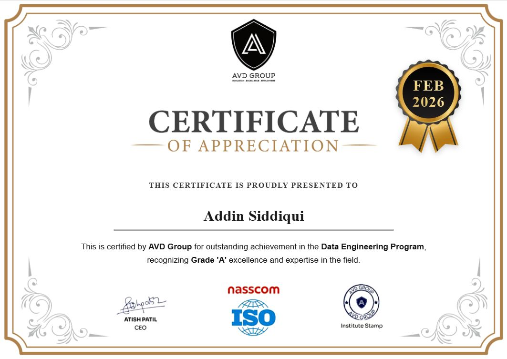

01 / SELECT
Skills
programming
PythonSQL
visualization
Power BIDAXPower QueryLooker Studio
excel
Pivot TablesVLOOKUP / XLOOKUPAdvanced FormulasCharts
data analysis
Data CleaningData TransformationEDA
database & cloud
Google BigQueryGCPCloud Composer / AirflowDataproc / PySpark
tools
PandasGit
02 / FROM
Projects
Real-Time IoT Data Pipeline
GCP- Built a real-time IoT data pipeline using Pub/Sub and Cloud Functions
- Processed and transformed streaming data in GCS and BigQuery for analysis
- Automated ETL workflows with Cloud Composer (Airflow), including data quality checks
- Created interactive Looker Studio dashboards to surface key business insights
Healthcare Revenue Cycle Management Pipeline
GCP- Built ETL pipelines on GCP using PySpark on Dataproc
- Transformed and loaded data into BigQuery for downstream analytics
- Automated end-to-end workflows using Apache Airflow
Generative AI Assistant
AI- Built a personal AI assistant that creatively answers queries related to college topics
- Designed a database layer to store and retrieve course material, FAQs, and past query history
- Deployed and hosted the assistant on AWS, structuring the backend for reliable, low-latency responses
- Tuned prompts and response logic to keep answers accurate, relevant, and easy to follow for students
Gesture Control System
CV- Created a vision-based app to control media functions using real-time hand gesture detection
- Used computer vision techniques to track hand landmarks and classify gestures on the fly
- Mapped recognized gestures to media actions such as play/pause, volume, and track navigation
- Applied data structures to keep gesture recognition fast and responsive with minimal lag
03 / WHERE
Experience
MIS Analyst
Nexa Business Solutions
Mar 2025 — Nov 2025
- Managed and analyzed data using Microsoft Excel and Google Sheets
- Prepared MIS reports and tracked follow-ups
- Supported business decisions with accurate, timely data insights
Jr. Android Developer Internship
Chetan's Royals Webtech Pvt. Ltd
Jan 2025 — Jun 2025 · Nagpur, Maharashtra (Remote)
- Assisted in designing, developing, and testing Android applications
- Worked with the development team to implement features, fix bugs, and optimize app performance
- Gained hands-on experience with Java/Kotlin, Android Studio, APIs, and modern mobile development practices
Industrial Training Internship
Sumago Infotech
Jan 2021 — Jun 2021 · Pune District, Maharashtra (Remote)
- Gained practical exposure to programming, databases, and software development
- Built hands-on projects through industry-based learning
04 / JOIN
Certifications

Certificate of Appreciation — Data Engineering Program
Feb 2026
05 / ORDER BY
Education
B.Tech, Computer Science
JNEC, Aurangabad, India
Diploma, Computer Science
MGM's Polytechnic, Aurangabad, India
Let's talk data.
Open to data analyst roles and interesting problems involving SQL, dashboards, and cloud pipelines.